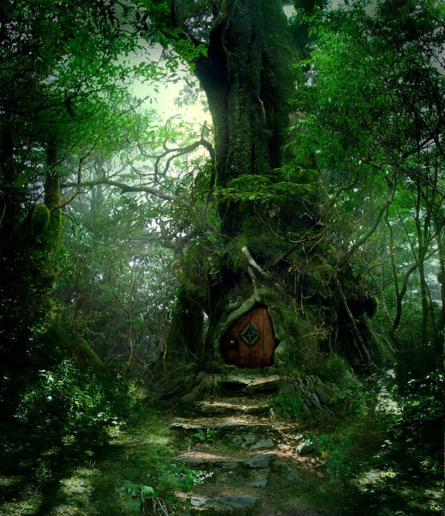

Vamos explorar esta ilha, Arqueóloga?
Você acaba de descer do Going Merry e ainda confusa, começa a explorar a ilha em busca de descobrir este lugar lindo e misterioso. De repente, uma gigante árvore chama sua atenção e ao chegar perto você se depara com uma estranha porta nesta árvore.
